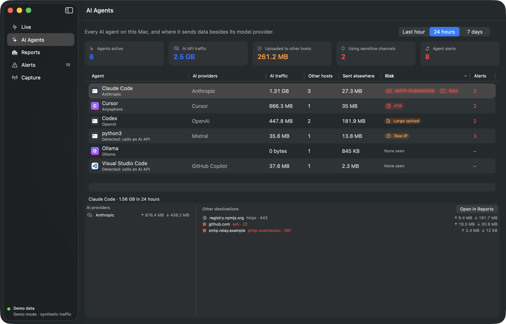
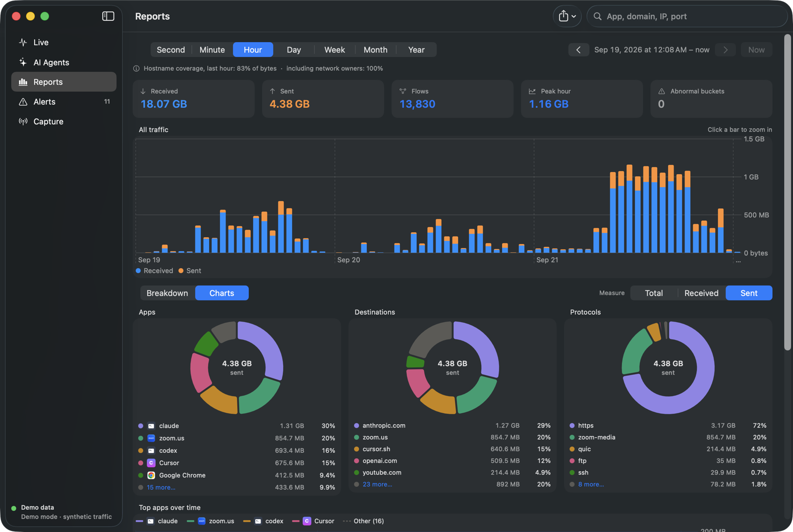
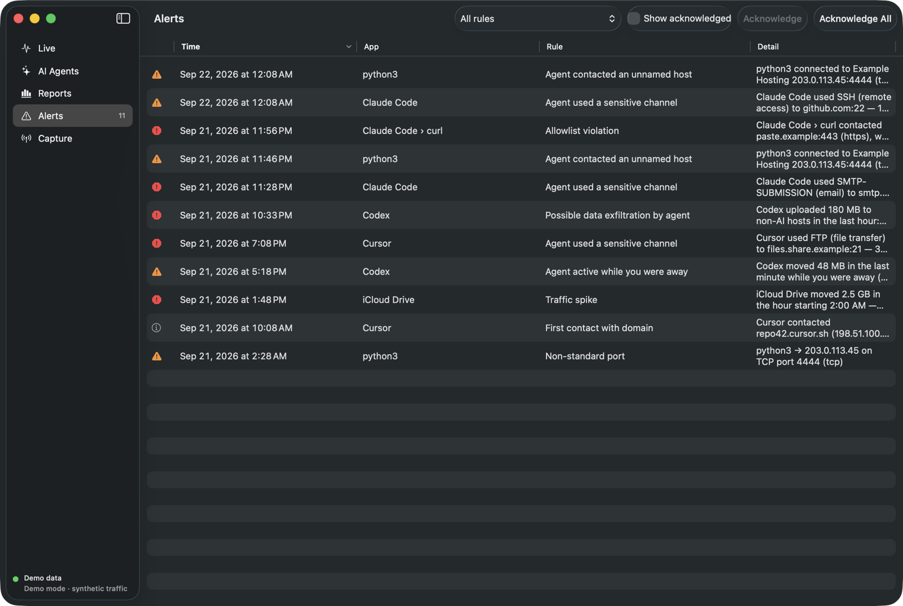

Free · open source · macOS 15+
Every app. Every domain. Every agent.
Flowlight shows which app on your Mac talked to which domain, over which protocol, and how much it sent. It keeps a closer eye on AI agents, so an email, an SSH session or a 180 MB upload you never asked for doesn't go unnoticed.
Universal disk image, 4 MB · No account, no cloud, no telemetry · GPL-3.0
- claudeapi.anthropic.com · https:443↑ 1.4 MB
- Chromewww.youtube.com · quic:443↓ 9.2 MB
- codexuploads.paste.example · https:443↑ 180 MB ⚠ possible exfiltration: 180 MB to a non-AI host in 1 h
- Slackwss-primary.slack.com · websocket↓ 120 KB
- Mailimap.mail.me.com · imaps:993↓ 210 KB
- claudesmtp.relay.example · smtp:587↑ 2.4 MB ⚠ agent used email (SMTP submission)
- Cursorapi2.cursor.sh · https:443↑ 800 KB
- timedtime.apple.com · ntp:123↓ 90 B
- mDNSResp…dns.google · dns-over-https↓ 6 KB

The AI Agents view: each agent's model provider, and everything else it talked to. Shown with demo data.
Capture
The two questions Activity Monitor can't answer
Which app sent it? Where did it go? Flowlight ties every TCP and UDP flow to its app and its real hostname, with bytes in and out, stored locally so you can look back an hour or a year.
Apps, command-line tools and background daemons, attributed by process. Your agents' helper scripts included.
Taken from TLS server names and DNS answers seen on the wire, so you see api.openai.com, not
104.18.7.192. Traffic with no name can show who owns the address.
Zoom from second to year. Group by app, by destination or by IP. Hover a spike to see the app behind it.
AI Agent Watch
Your agents have network access. Now you have oversight.
Flowlight knows 16 agents by name. It also spots any other process that calls one of 25 LLM API
providers, so a Python script talking to api.openai.com is an agent too. Browsers don't count:
a person chatting isn't an agent.
Sensitive channel
The agent sends email, transfers files, opens SSH or remote desktop, goes through a tunnel or proxy, or talks to a database.
Claude Code used SMTP-SUBMISSION to smtp.relay.example:587, 2.4 MB sent
Possible exfiltration
More than 100 MB an hour goes to hosts that aren't AI providers.
Codex uploaded 180 MB to non-AI hosts in the last hour: uploads.paste.example
Unnamed host
A connection to a bare IP address with no hostname, on an unusual port.
python3 connected to 203.0.113.45:4444 (tcp) with no hostname
Active while you're away
Data keeps moving after 15 minutes without keyboard or mouse input.
Codex moved 48 MB in the last minute while you were away (no input for 37 min)
New destination, sooner
Agents get a 1-hour learning period before new-domain alerts start (24 hours for other apps). Every threshold is adjustable.
Coverage
108 protocols, named in 13 families
Recognized by port and by the first bytes on the wire (TLS handshakes, HTTP methods, mail and SSH greetings, SOCKS requests). Families marked egress channel are the ones the agent rules watch.
Web
9File transfer
egress channelRemote access
egress channelVPN, proxy & tunnels
egress channelDatabases & caches
egress channelPeer-to-peer
egress channelName resolution
8Messaging & queues
12Voice, video & streaming
5Network services
19Push & developer
6Flowlight observes every TCP and UDP flow, which covers essentially all app traffic. ICMP (ping) and other raw-IP protocols aren't attributed, and encrypted payloads are never decrypted.
Privacy
A monitor you don't have to monitor
One local SQLite file. No account, no cloud sync, no telemetry.
Hostnames, ports and byte counts. Packet contents are never stored.
Capture passes only DNS answers and TLS ClientHellos. Everything else is dropped before Flowlight sees it.
Naming who owns an address is off by default. The daily update check only asks GitHub for the latest version, and can be turned off.


Install
Running in under a minute
- Download Flowlight.dmg
Open it and drag Flowlight into Applications. A .pkg installer is also on every release.
- Launch it
Traffic appears within a second, and live ↓↑ rates sit in your menu bar.
- Name your traffic
Approve the one-time setup (your password, once) so Flowlight can read hostnames.
Prefer to build it yourself, or look around with sample data first?
# build from source (Xcode 16+, no Apple account needed) brew install xcodegen git clone https://github.com/xinbetween/flowlight.git cd flowlight && xcodegen generate scripts/build-local.sh # explore with 90 days of synthetic traffic open Flowlight.app --args -FLDemo YES
FAQ
Questions
Does Flowlight block traffic?
No. It observes and alerts. Per-agent allowlists and block rules are on the roadmap for the Network Extension build.
Can it read my HTTPS traffic?
No, and it doesn't try. It reads the hostname a client asks for when it opens a connection (TLS SNI) and the DNS answers that map names to addresses. Contents stay encrypted.
How is this different from Little Snitch or LuLu?
Those are firewalls that ask you to allow connections. Flowlight is an analytics tool: history at any zoom, anomaly baselines, and rules built for AI agents. They work well side by side.
Why does it ask for my password?
macOS only lets administrators read network packets. The one-time setup gives your account read access, the same way Wireshark does. You can remove it any time from the Capture screen.
Which agents does it recognize?
Claude Code, Codex, Cursor, Windsurf, GitHub Copilot, Gemini CLI, Aider, Goose, OpenCode, Ollama, LM Studio, ChatGPT, Claude, Zed, Perplexity and ZCode, plus any non-browser process that calls a known LLM API. Adding one is a one-line pull request.
Is it really free?
Yes. It's free software under the GPL-3.0: no paid tier, no data collection.
Know what leaves your Mac.
Free and open source, for macOS 15 and later.